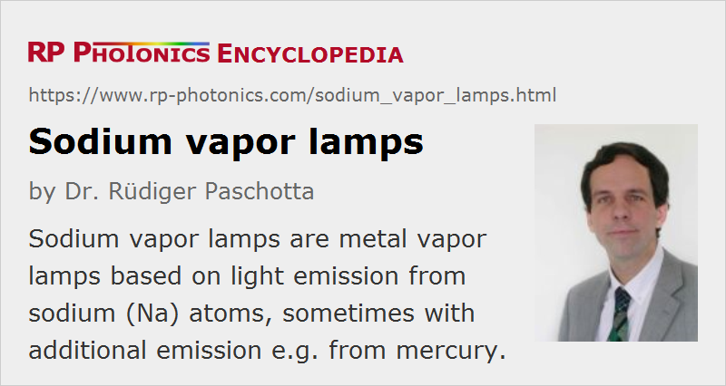

Sodium Vapor Lamps
Acronym: LPS lamps (low-pressure sodium lamps), HPS lamps (high pressure sodium lamps)
Definition: metal vapor lamps based on light emission from sodium (Na) atoms
More general term: gas discharge lamps
German: Natriumdampflampen
Category: non-laser light sources
How to cite the article; suggest additional literature
Author: Dr. Rüdiger Paschotta
Sodium vapor lamps are metal vapor lamps based on light emission from sodium (Na) atoms, sometimes with additional emission e.g. from mercury. They largely exploit the characteristic orange 589-nm D-line of sodium atoms, which has also been extensively studied in physics.
Like most other types of metal vapor lamps, sodium vapor lamps need to be operated with a suitable electrical ballast for stabilizing the electric current.
Low-pressure Sodium Lamps
Low-pressure sodium lamps (LPS lamps) are normally made with a cylindrical or U-shaped glass tube with a length of several centimeters. Due to the low operation pressure (e.g. below 1 Pa), the power density is moderate, leading to light emission with a limited radiance, as is typical for low-pressure discharge lamps.
In order to get the electric discharge started, the lamp housing needs to contain a small amount of a starter gas, typically neon and/or argon, in addition to the sodium. The discharge can then be initiated in that gas, and the resulting temperature rise leads to evaporation of the sodium. It takes a couple of minutes until the lamp can reach its full brightness.
Sodium vapor lamps produce orange quasi-monochromatic light with only little pressure broadening. More precisely speaking, there are two closely located narrow spectral lines at 589.0 nm and 589.6 nm; that detail, however, is not significant for the visual appearance. There are also several quite weak emission lines from the starter gas, which however are usually insignificant for the application.
Sodium lamps are still sometimes used for street lighting and can be easily recognized from the typical orange light color. They are relatively energy-efficient and have a long lifetime (well above 10,000 hours). Their emission spectrum is of course not suitable for color vision, but can be advantageous for lighting under adverse weather conditions, because the relatively long-wavelength light is less scattered e.g. by tiny water droplets in the air and thus more effectively supports vision with little glare.
The lamp efficiency can be further increased by using an additional outer bulb and a vacuum between the two bulbs, because that minimizes the heat losses. The luminous efficacy can then reach excellent values around 200 lm/W for photopic vision; note that the emission wavelength of 589 nm is relatively close to the peak of the photopic response function, while it does not fit so well for scotopic vision.
High-pressure Sodium Lamps
There are also high-pressure sodium vapor lamps (HPS lamps), also containing some mercury, operated with a much higher power density (also a smaller emitting volume) and a correspondingly higher radiance. The arc tube is normally made from translucent alumina (aluminum oxide) ceramics, which can better withstand the high operation temperature and the high chemical reactivity of the hot sodium vapor, compared with lamps glasses.
The optical emission spectrum is substantially pressure-broadened due to the high collision rates in the dense gas. There is still a particularly pronounced emission from sodium in the red–orange–yellow region, but also there is some emission in the green, blue and violet from the mercury. Overall, a kind of white light is obtained, but still with an orange color tone. Color vision is somewhat supported, but still with a poor color rendering index, e.g. compared with xenon lamps. The luminous efficacy can again be quite high, e.g. around 150 lm/W particularly for the higher-power models. Xenon is usually used as the starter gas. Lamp life times of 20,000 hours and more are possible.
Partly because of the toxic and environmentally problematic mercury, high-pressure sodium lamps are and more and more replaced by alternative solutions in many applications. Also, there are lamp types which still contain mercury but have other advantages, particularly in terms of color rendering. For example, metal halide lamps are increasingly used, some of them being mercury-free.
Questions and Comments from Users
Here you can submit questions and comments. As far as they get accepted by the author, they will appear above this paragraph together with the author’s answer. The author will decide on acceptance based on certain criteria. Essentially, the issue must be of sufficiently broad interest.
Please do not enter personal data here; we would otherwise delete it soon. (See also our privacy declaration.) If you wish to receive personal feedback or consultancy from the author, please contact him e.g. via e-mail.
By submitting the information, you give your consent to the potential publication of your inputs on our website according to our rules. (If you later retract your consent, we will delete those inputs.) As your inputs are first reviewed by the author, they may be published with some delay.
See also: metal vapor lamps
and other articles in the category non-laser light sources
|  |
If you like this page, please share the link with your friends and colleagues, e.g. via social media:
These sharing buttons are implemented in a privacy-friendly way!